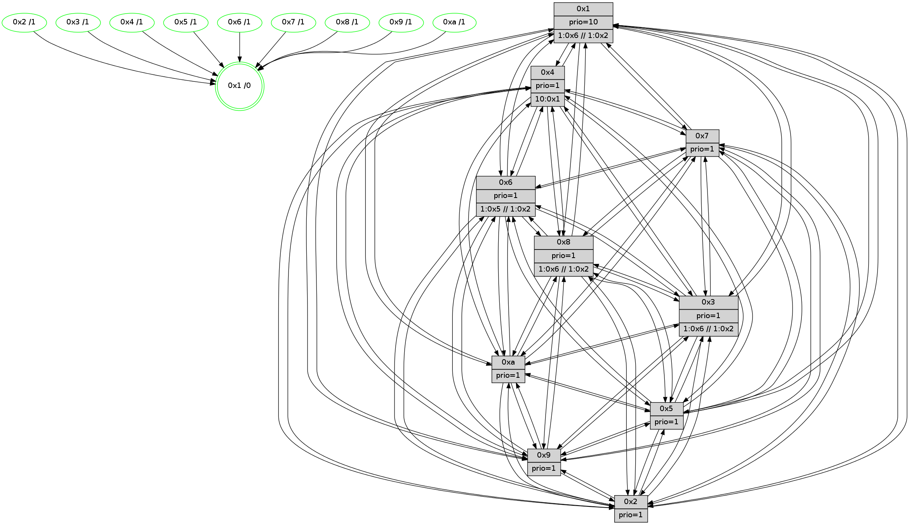

>> << IDX [start] -100 -25 -5 +0 +5 +25 +100 [560.001582146]
 Previous packets
----------------------------------------------------------------------
555.272795 beacon01(faad) #0 coord=01,02,03,04,05,06,07,0a,09,08 cycle=688.0ms assoc
-- color-indic=1 64 a3 8a
555.282780 beacon02(faad) #0 coord=01,02,03,04,05,06,07,0a,09,08 cycle=688.0ms assoc 64 30 bb
555.292777 beacon03(faad) #0 coord=01,02,03,04,05,06,07,0a,09,08 cycle=688.0ms assoc 64 4a f6
555.302778 beacon04(faad) #0 coord=01,02,03,04,05,06,07,0a,09,08 cycle=688.0ms assoc 64 3d 1c
555.312777 beacon05(faad) #0 coord=01,02,03,04,05,06,07,0a,09,08 cycle=688.0ms assoc 64 47 51
555.322778 beacon06(faad) #0 coord=01,02,03,04,05,06,07,0a,09,08 cycle=688.0ms assoc 64 c9 86
555.332779 beacon07(faad) #0 coord=01,02,03,04,05,06,07,0a,09,08 cycle=688.0ms assoc 64 b3 cb
555.342783 beacon0a(faad) #0 coord=01,02,03,04,05,06,07,0a,09,08 cycle=688.0ms assoc 64 c2 c0
555.352783 beacon09(faad) #0 coord=01,02,03,04,05,06,07,0a,09,08 cycle=688.0ms assoc 64 4c 17
555.362784 beacon08(faad) #0 coord=01,02,03,04,05,06,07,0a,09,08 cycle=688.0ms assoc 64 36 5a
555.374683 [Hello(1): seq=266 sym=4,2,9,5,10,3,8,6,7 sysInfo=coloring-mode-on,ColoringModeRequestCalled stat=4:3,11,12,5/2:2,9,13,6/9:12,15,15,6/5:10,15,11,7/10:4,6,13,4/3:2,12,14,7/8:1,10,1,4/6:6,15,14,3/7:15,6,0,6]
555.377401 [Color(10) seq=26 @0:0 prio=1]
555.378690 [Color(8) seq=37 @0:0 prio=1 >1.@5,1.@6,1.@7,1.@9 >>1.@2,1.@3,1.@4]
555.381061 [Color(9) seq=21 @0:0 prio=1]
555.384076 [Hello(6): seq=357 sym=2,3,5,4,7,9,8,10,1 sysInfo=coloring-mode-on,ColoringModeIndicationCalled stat=2:5,5,14,4/3:5,13,9,4/5:7,8,10,7/4:6,6,10,4/7:7,15,10,2/9:5,10,12,6/8:3,9,10,3/10:6,7,13,4/1:4,2,14,0]
555.386769 [Hello(7): seq=357 sym=2,3,5,6,4,8,9,10,1 sysInfo= stat=2:8,2,14,7/3:0,12,10,6/5:1,6,11,8/6:7,0,4,2/4:11,3,12,4/8:0,0,12,2/9:15,6,12,7/10:3,6,12,4/1:3,15,0,0]
555.390427 [Color(3) seq=37 @0:0 prio=1 >1.@5,1.@6,1.@7,1.@8 >>1.@2,1.@3,1.@4]
555.393111 [Color(6) seq=37 @0:0 prio=1 >1.@5,1.@7,1.@8,1.@9 >>1.@2,1.@3,1.@4]
555.397776 [Color(5) seq=21 @0:0 prio=1]
555.402673 [Color(7) seq=25 @0:0 prio=1]
----------------------------------------------------------------------
556.060925 beacon01(faad) #0 coord=01,02,03,04,05,06,07,0a,09,08 cycle=688.0ms assoc
-- color-indic=1 64 1f 8f
556.070908 beacon02(faad) #0 coord=01,02,03,04,05,06,07,0a,09,08 cycle=688.0ms assoc 64 8c be
556.080907 beacon03(faad) #0 coord=01,02,03,04,05,06,07,0a,09,08 cycle=688.0ms assoc 64 f6 f3
556.090908 beacon04(faad) #0 coord=01,02,03,04,05,06,07,0a,09,08 cycle=688.0ms assoc 64 81 19
556.110909 beacon06(faad) #0 coord=01,02,03,04,05,06,07,0a,09,08 cycle=688.0ms assoc 64 75 83
556.120909 beacon07(faad) #0 coord=01,02,03,04,05,06,07,0a,09,08 cycle=688.0ms assoc 64 0f ce
556.130914 beacon0a(faad) #0 coord=01,02,03,04,05,06,07,0a,09,08 cycle=688.0ms assoc 64 7e c5
556.140913 beacon09(faad) #0 coord=01,02,03,04,05,06,07,0a,09,08 cycle=688.0ms assoc 64 f0 12
556.150915 beacon08(faad) #0 coord=01,02,03,04,05,06,07,0a,09,08 cycle=688.0ms assoc 64 8a 5f
556.162072 [Hello(4): seq=358 sym=5,7,6,2,3,9,8,10,1 sysInfo= stat=5:0,13,8,6/7:3,7,10,2/6:11,0,11,4/2:10,9,9,5/3:2,10,0,1/9:15,12,6,3/8:10,9,12,4/10:14,0,9,3/1:11,4,3,0]
556.164775 [Hello(8): seq=301 sym=5,3,4,7,6,9,10,1 sysInfo=coloring-mode-on,ColoringModeIndicationCalled stat=5:13,8,8,5/3:4,3,6,6/4:12,8,11,4/7:14,1,11,4/6:4,13,11,4/9:12,10,9,4/10:9,9,6,4/1:5,7,2,0]
556.167200 [Color(1) seq=38 @0:0 prio=10 >1.@5,1.@6,1.@7,1.@8 >>1.@2,1.@3,1.@4]
556.169448 [Hello(9): seq=301 sym=5,2,3,4,7,6,8,10,1 sysInfo=hasWarning stat=5:11,9,6,6/2:5,8,11,4/3:12,10,4,3/4:0,7,8,4/7:4,3,10,2/6:12,9,9,3/8:13,7,7,1/10:10,11,7,4/1:6,4,1,0]
556.173276 [Hello(2): seq=355 sym=4,5,7,6,3,9,8,10,1 sysInfo=hasWarning stat=4:12,7,8,1/5:14,11,7,4/7:1,9,10,3/6:6,0,11,3/3:7,8,1,1/9:1,10,6,1/8:8,1,4,1/10:15,15,5,2/1:10,4,1,0]
556.175830 [Hello(10): seq=290 sym=6,2,3,8,9,5,7,4,1 sysInfo= stat=6:5,12,10,3/2:3,0,1,0/3:2,2,1,0/8:6,7,10,3/9:1,10,8,3/5:10,9,7,5/7:2,6,9,2/4:7,9,7,5/1:4,5,1,0]
556.179615 [Hello(3): seq=358 sym=1,7,6,2,4,8,9,10,5 sysInfo=coloring-mode-on,ColoringModeIndicationCalled stat=1:10,8,0,0/7:1,4,8,3/6:8,8,8,4/2:10,6,10,6/4:15,8,10,3/8:9,9,5,0/9:1,10,13,5/10:13,7,5,2/5:15,8,9,5]
556.189868 [Hello(5): seq=358 sym=7,6,4,3,1,9,8,10,2 sysInfo= stat=7:1,5,12,3/6:4,14,12,3/4:8,9,8,3/3:6,1,1,1/1:13,4,15,0/9:5,10,9,3/8:7,0,5,2/10:5,15,8,3/2:6,7,9,3]
----------------------------------------------------------------------
556.849055 beacon01(faad) #0 coord=01,02,03,04,05,06,07,0a,09,08 cycle=688.0ms assoc
-- color-indic=1 64 2b 97
556.859037 beacon02(faad) #0 coord=01,02,03,04,05,06,07,0a,09,08 cycle=688.0ms assoc 64 b8 a6
556.869037 beacon03(faad) #0 coord=01,02,03,04,05,06,07,0a,09,08 cycle=688.0ms assoc 64 c2 eb
556.879038 beacon04(faad) #0 coord=01,02,03,04,05,06,07,0a,09,08 cycle=688.0ms assoc 64 b5 01
556.889038 beacon05(faad) #0 coord=01,02,03,04,05,06,07,0a,09,08 cycle=688.0ms assoc 64 cf 4c
556.899038 beacon06(faad) #0 coord=01,02,03,04,05,06,07,0a,09,08 cycle=688.0ms assoc 64 41 9b
556.909038 beacon07(faad) #0 coord=01,02,03,04,05,06,07,0a,09,08 cycle=688.0ms assoc 64 3b d6
556.919043 beacon0a(faad) #0 coord=01,02,03,04,05,06,07,0a,09,08 cycle=688.0ms assoc 64 4a dd
556.929043 beacon09(faad) #0 coord=01,02,03,04,05,06,07,0a,09,08 cycle=688.0ms assoc 64 c4 0a
556.939045 beacon08(faad) #0 coord=01,02,03,04,05,06,07,0a,09,08 cycle=688.0ms assoc 64 be 47
556.950268 [Hello(1): seq=267 sym=4,2,9,5,10,3,8,6,7 sysInfo=coloring-mode-on,ColoringModeRequestCalled stat=4:4,11,12,5/2:3,9,13,6/9:13,0,15,6/5:11,0,11,7/10:5,7,13,4/3:3,13,14,7/8:1,11,1,4/6:7,0,14,3/7:0,7,0,6]
556.953325 [Color(8) seq=38 @0:0 prio=1 >1.@5,1.@6,1.@7,1.@9 >>1.@2,1.@3,1.@4]
556.955259 [Color(3) seq=38 @0:0 prio=1 >1.@5,1.@6,1.@7,1.@8 >>1.@2,1.@3,1.@4]
556.961002 [Color(6) seq=38 @0:0 prio=1 >1.@5,1.@7,1.@8,1.@9 >>1.@2,1.@3,1.@4]
556.962956 [STC(1) #0.26 tree-change,inconsistent-stability,stable,to-color d=0]
556.964451 [Color(2) seq=16 @0:0 prio=1]
556.967130 [Color(10) seq=27 @0:0 prio=1]
556.969503 [Hello(7): seq=358 sym=2,3,5,6,4,8,9,10,1 sysInfo= stat=2:9,2,14,7/3:1,12,10,6/5:2,6,11,8/6:7,0,4,2/4:12,3,12,4/8:1,0,12,2/9:0,6,12,7/10:4,6,12,4/1:4,0,0,0]
556.973605 [Color(7) seq=26 @0:0 prio=1]
----------------------------------------------------------------------
557.637186 beacon01(faad) #0 coord=01,02,03,04,05,06,07,0a,09,08 cycle=688.0ms assoc
-- color-indic=1 64 97 92
557.647170 beacon02(faad) #0 coord=01,02,03,04,05,06,07,0a,09,08 cycle=688.0ms assoc 64 04 a3
557.657168 beacon03(faad) #0 coord=01,02,03,04,05,06,07,0a,09,08 cycle=688.0ms assoc 64 7e ee
557.667170 beacon04(faad) #0 coord=01,02,03,04,05,06,07,0a,09,08 cycle=688.0ms assoc 64 09 04
557.677169 beacon05(faad) #0 coord=01,02,03,04,05,06,07,0a,09,08 cycle=688.0ms assoc 64 73 49
557.687169 beacon06(faad) #0 coord=01,02,03,04,05,06,07,0a,09,08 cycle=688.0ms assoc 64 fd 9e
557.697170 beacon07(faad) #0 coord=01,02,03,04,05,06,07,0a,09,08 cycle=688.0ms assoc 64 87 d3
557.707174 beacon0a(faad) #0 coord=01,02,03,04,05,06,07,0a,09,08 cycle=688.0ms assoc 64 f6 d8
557.717176 beacon09(faad) #0 coord=01,02,03,04,05,06,07,0a,09,08 cycle=688.0ms assoc 64 78 0f
557.727175 beacon08(faad) #0 coord=01,02,03,04,05,06,07,0a,09,08 cycle=688.0ms assoc 64 02 42
557.738417 [Hello(2): seq=356 sym=4,5,7,6,3,9,8,10,1 sysInfo=hasWarning stat=4:12,7,8,1/5:15,11,7,4/7:2,10,10,3/6:6,0,11,3/3:8,8,1,1/9:1,10,6,1/8:8,1,4,1/10:0,0,5,2/1:11,4,1,0]
557.740863 [Hello(3): seq=359 sym=1,7,6,2,4,8,9,10,5 sysInfo=coloring-mode-on,ColoringModeIndicationCalled stat=1:11,8,1,0/7:2,5,8,3/6:9,9,8,4/2:10,7,10,6/4:15,8,10,3/8:9,9,5,0/9:1,10,13,5/10:13,8,5,2/5:0,8,9,5]
557.743349 [Color(1) seq=39 @0:0 prio=10 >1.@6,1.@7,1.@8,1.@9 >>1.@2,1.@3,1.@5]
557.745691 [Hello(10): seq=291 sym=6,2,3,8,9,5,7,4,1 sysInfo= stat=6:5,12,10,3/2:3,0,1,0/3:3,2,1,0/8:6,7,10,3/9:1,10,8,3/5:11,9,7,5/7:3,7,9,2/4:7,9,7,5/1:5,5,1,0]
557.748664 [STC(6)->1 #0.26 tree-change,inconsistent-stability,stable,to-color d=1]
557.751683 [Hello(9): seq=302 sym=5,2,3,4,7,6,8,10,1 sysInfo=hasWarning stat=5:12,9,6,6/2:6,9,11,4/3:13,10,4,3/4:0,7,8,4/7:5,4,10,2/6:12,10,9,3/8:13,7,7,1/10:11,12,7,4/1:7,4,2,0]
557.754484 [Hello(4): seq=359 sym=5,7,6,2,3,9,8,10,1 sysInfo= stat=5:1,13,8,6/7:4,8,10,2/6:11,1,11,4/2:11,10,9,5/3:3,11,0,1/9:0,13,6,3/8:11,10,12,4/10:15,1,9,3/1:12,5,4,0]
557.759127 [STC(3)->1 #0.26 tree-change,inconsistent-stability,stable,to-color d=1]
557.761928 [STC(4)->1 #0.26 tree-change,inconsistent-stability,stable,to-color d=1]
557.764190 [Hello(8): seq=302 sym=5,2,3,4,7,6,9,10,1 sysInfo=coloring-mode-on,ColoringModeIndicationCalled stat=5:14,8,8,5/2:0,1,0,0/3:5,4,6,6/4:12,8,11,4/7:15,2,11,4/6:5,14,11,4/9:13,10,9,4/10:10,10,6,4/1:6,8,3,0]
557.767311 [STC(8)->1 #0.26 tree-change,inconsistent-stability,stable,to-color d=1]
557.769472 [TreeStatus(4)-.->1 #0.26 tree-change,inconsistent-stability,stable child=1]
557.770919 [STC(9)->1 #0.26 tree-change,inconsistent-stability,stable,to-color d=1]
557.772876 [Hello(5): seq=359 sym=7,6,4,3,1,9,8,10,2 sysInfo= stat=7:2,6,12,3/6:4,15,12,3/4:8,9,8,3/3:6,1,1,1/1:14,4,0,0/9:5,10,9,3/8:7,0,5,2/10:5,0,8,3/2:6,8,9,3]
557.776974 [STC(5)->1 #0.26 tree-change,inconsistent-stability,stable,to-color d=1]
----------------------------------------------------------------------
558.425316 beacon01(faad) #0 coord=01,02,03,04,05,06,07,0a,09,08 cycle=688.0ms assoc
-- color-indic=1 64 53 9c
558.435298 beacon02(faad) #0 coord=01,02,03,04,05,06,07,0a,09,08 cycle=688.0ms assoc 64 c0 ad
558.445299 beacon03(faad) #0 coord=01,02,03,04,05,06,07,0a,09,08 cycle=688.0ms assoc 64 ba e0
558.455299 beacon04(faad) #0 coord=01,02,03,04,05,06,07,0a,09,08 cycle=688.0ms assoc 64 cd 0a
558.465300 beacon05(faad) #0 coord=01,02,03,04,05,06,07,0a,09,08 cycle=688.0ms assoc 64 b7 47
558.475299 beacon06(faad) #0 coord=01,02,03,04,05,06,07,0a,09,08 cycle=688.0ms assoc 64 39 90
558.485300 beacon07(faad) #0 coord=01,02,03,04,05,06,07,0a,09,08 cycle=688.0ms assoc 64 43 dd
558.495304 beacon0a(faad) #0 coord=01,02,03,04,05,06,07,0a,09,08 cycle=688.0ms assoc 64 32 d6
558.505305 beacon09(faad) #0 coord=01,02,03,04,05,06,07,0a,09,08 cycle=688.0ms assoc 64 bc 01
558.515304 beacon08(faad) #0 coord=01,02,03,04,05,06,07,0a,09,08 cycle=688.0ms assoc 64 c6 4c
558.526562 [Hello(1): seq=268 sym=4,2,9,5,10,3,8,6,7 sysInfo=coloring-mode-on,ColoringModeRequestCalled stat=4:5,11,13,6/2:4,10,13,6/9:14,0,0,6/5:12,0,12,7/10:6,8,13,4/3:3,13,15,7/8:2,11,2,4/6:7,0,15,3/7:1,8,0,6]
558.529922 [Color(5) seq=23 @0:0 prio=1]
558.531352 [Color(3) seq=39 @0:0 prio=1 >1.@6,1.@7,1.@8,1.@9 >>1.@2,1.@3,1.@5]
558.533507 [Hello(6): seq=359 sym=2,3,5,4,7,9,8,10,1 sysInfo=coloring-mode-on,ColoringModeIndicationCalled stat=2:6,6,14,4/3:6,13,10,4/5:9,9,11,7/4:8,6,11,5/7:8,1,10,2/9:7,10,13,6/8:5,10,11,3/10:7,8,13,4/1:6,3,15,0]
558.538332 [Color(9) seq=23 @0:0 prio=1]
558.540979 [Hello(7): seq=359 sym=2,3,5,6,4,8,9,10,1 sysInfo= stat=2:10,2,14,7/3:1,12,11,6/5:3,6,12,8/6:7,0,5,2/4:13,3,13,5/8:2,0,13,2/9:1,6,13,7/10:4,6,12,4/1:5,0,0,0]
558.543806 [Color(7) seq=27 @0:0 prio=1]
558.551391 [Color(8) seq=39 @0:0 prio=1 >1.@6,1.@7,1.@9,1.@a >>1.@2,1.@3,1.@5]
558.553676 [Color(10) seq=28 @0:0 prio=1]
558.555206 [Color(2) seq=17 @0:0 prio=1]
----------------------------------------------------------------------
559.213449 beacon01(faad) #0 coord=01,02,03,04,05,06,07,0a,09,08 cycle=688.0ms assoc
-- color-indic=1 64 ef 99
559.223432 beacon02(faad) #0 coord=01,02,03,04,05,06,07,0a,09,08 cycle=688.0ms assoc 64 7c a8
559.233433 beacon03(faad) #0 coord=01,02,03,04,05,06,07,0a,09,08 cycle=688.0ms assoc 64 06 e5
559.243433 beacon04(faad) #0 coord=01,02,03,04,05,06,07,0a,09,08 cycle=688.0ms assoc 64 71 0f
559.253433 beacon05(faad) #0 coord=01,02,03,04,05,06,07,0a,09,08 cycle=688.0ms assoc 64 0b 42
559.263433 beacon06(faad) #0 coord=01,02,03,04,05,06,07,0a,09,08 cycle=688.0ms assoc 64 85 95
559.273433 beacon07(faad) #0 coord=01,02,03,04,05,06,07,0a,09,08 cycle=688.0ms assoc 64 ff d8
559.283439 beacon0a(faad) #0 coord=01,02,03,04,05,06,07,0a,09,08 cycle=688.0ms assoc 64 8e d3
559.293437 beacon09(faad) #0 coord=01,02,03,04,05,06,07,0a,09,08 cycle=688.0ms assoc 64 00 04
559.303439 beacon08(faad) #0 coord=01,02,03,04,05,06,07,0a,09,08 cycle=688.0ms assoc 64 7a 49
559.314658 [Hello(5): seq=360 sym=7,6,4,3,1,9,8,10,2 sym= sysInfo= stat=]
559.317666 [Hello(2): seq=357 sym=4,5,7,6,3,9,8,10,1 sysInfo=hasWarning stat=4:13,7,9,2/5:0,11,8,4/7:2,10,10,3/6:6,0,12,3/3:9,8,2,1/9:2,10,7,1/8:9,1,5,1/10:1,0,5,2/1:12,5,1,0]
559.320472 [Color(1) seq=40 @0:0 prio=10 >1.@6,1.@7,1.@8,1.@9 >>1.@2,1.@3,1.@5]
559.324221 [Hello(8): seq=303 sym=5,2,3,4,7,6,9,10,1 sysInfo=coloring-mode-on,ColoringModeIndicationCalled stat=5:15,8,9,5/2:0,2,0,0/3:5,4,6,6/4:12,8,11,5/7:15,2,11,4/6:5,14,11,4/9:13,10,10,4/10:10,11,6,4/1:7,8,3,0]
559.331517 [Hello(10): seq=292 sym=6,2,3,8,9,5,7,4,1 sysInfo= stat=6:5,12,11,3/2:3,1,1,0/3:3,2,2,0/8:7,7,11,3/9:2,10,9,3/5:12,9,8,5/7:3,7,9,2/4:8,9,8,6/1:6,5,1,0]
559.337157 [Hello(3): seq=360 sym=1,7,6,2,4,8,9,10,5 sysInfo=coloring-mode-on,ColoringModeIndicationCalled stat=1:12,8,1,0/7:3,6,8,3/6:10,10,8,4/2:10,8,10,6/4:15,8,11,4/8:10,10,6,0/9:1,11,14,5/10:13,9,5,2/5:1,8,10,5]